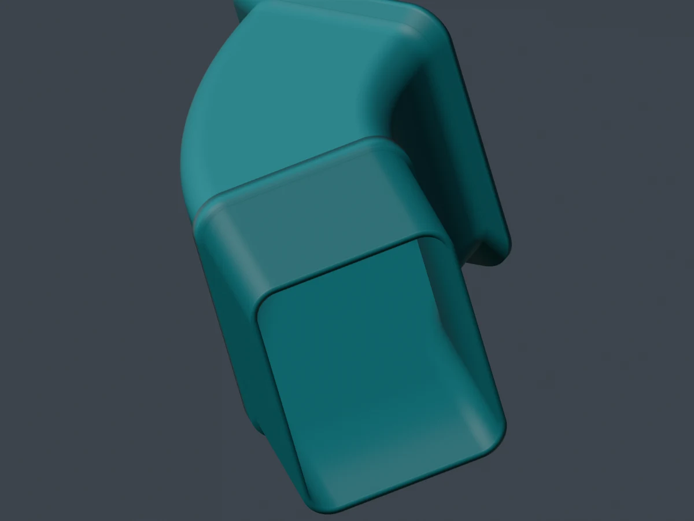

R016 · Mainline reference review · 18 October 2026
Four routes. Mechanisms before models.
All four existing designs remain rejected. The mainline review now identifies replacement mechanisms from actual installed references, with their manufacturing and clearance constraints. Modelling remains paused.
No accepted design · No fit or performance approval
The scoop no longer depends on finding a specific GR download. The hood direction is a shallow removable shell with an offset inboard side feed.
Rejected R014 study, preserved for comparison. Scan contours alone did not make this hood architecture correct.
All four require reconsideration
What must change.

01 · Closed liner duct
Problem: The bulky passage does not convincingly reproduce the reference's shallow, swept form. The old review image also clips the silhouette.
Direction: Use the inspected donor’s integrated liner flange, shallow compound sweep and free outlet. Establish the actual liner seat, fasteners and tire sweep before choosing sections.
Problem: The faceted tray has no credible installed pickup, support and discharge layout. The inspected arm-mounted example does not establish the requested mount.
Direction: Use a low curved open guide and exposed pickup on a separate knuckle-region carrier. Chevrolet’s rear knuckle guide is a useful analogy, but uses a separate arm pickup. Our GR layout still needs a credible carrier and a path past the rotor shield; no exact donor download is required.
Problem: A generic adapter and blank flange do not define the rotor-vane interface or attachment.
Direction: Develop a separate backing carrier and local rotor-throat shoe, following the Verus mechanism while retaining the OEM structural caliper bracket. The hose solid can be omitted; its approach and movement cannot.
Problem: Tall rails and a header remain the wrong architecture. Broader outlets did not resolve its shape or inlet approach.
Direction: A low caliper-following shell with side entry, an identified discharge target and removable retention. Reconsider the whole shell, not just the neck.
Drag to orbit and scroll or pinch to zoom. Each component is centred separately for inspection; this is not a fitted whole-car assembly.
Loading the rejected hood study…
Side entry is mandatory. Reconsider the complete shell and service access.
04 · Side entry is mandatory
A different architecture, not a rotated neck.
The proposed direction is a low removable shell following the caliper crown, supported by the inspected AP and Sprogley references. It can bridge the service window and come off before pad service. Air enters at an inboard shoulder, approximately along the axle direction. A central approach conflicts with the hydraulic line; upper and lower offset routes still need comparison against the strut, CV and wheel envelope.
Lay out the rotor and hood circuits separately before selecting their supply. Defined pad-edge/body outlets and heat escape matter. A shared supply does not guarantee a useful flow split, and caliper washing does not prove friction-interface cooling.
Review before modelling
The next work, in order.
Reference-led layouts: Show each inlet, target, attachment, moving group and service path in comparable, uncropped views.
Assembly frame: Reconcile rotor axis, scan landmarks and photographs. Distinguish apparent vertical from measured gravity and camber; establish scale before physical tolerances.
Architecture review: Review those layouts before restarting geometry. Build a simple installed envelope first, then compare it directly with the donor.
Validation: Check attachment, target and obstruction, service and motion, then detailed mesh and saved-file integrity. Cooling performance needs separate evidence.
Useful reuse
Reuse the measured liner interface across 1/3/4 and the selected rotor-circuit mechanism across 3/4. Keep hot-side carriers separate from cold-side captures. Use formed metal where simple; a compound hood needs a specified high-temperature material and separate retention.
Still unresolved
Physical calibration, hidden mounting stacks, wheel and motion envelopes, the scoop’s shield-to-vane path, and the hood’s offset inlet corridor and retention. None of the rejected shapes is retained by default.
These references describe different mechanisms and applications. Donor dimensions and mounts do not automatically transfer. The exact paid Cults mesh has not been obtained.